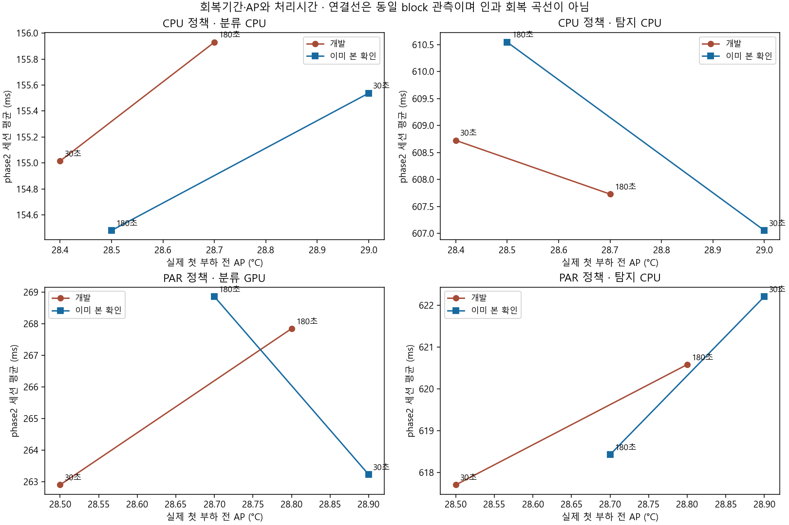
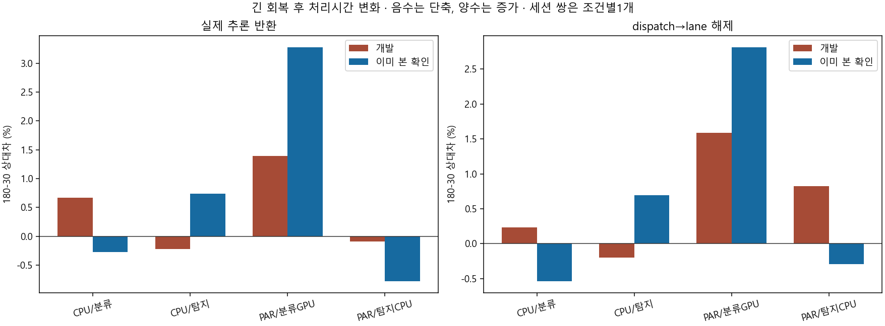
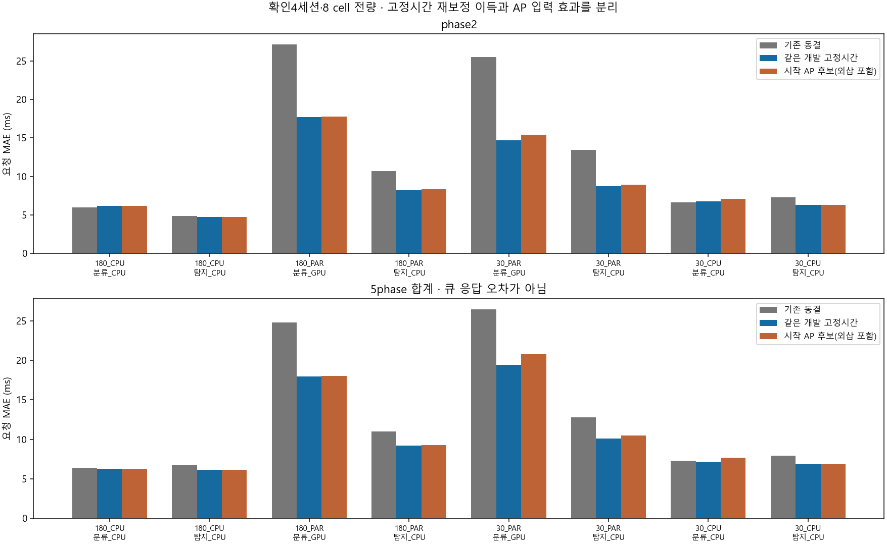
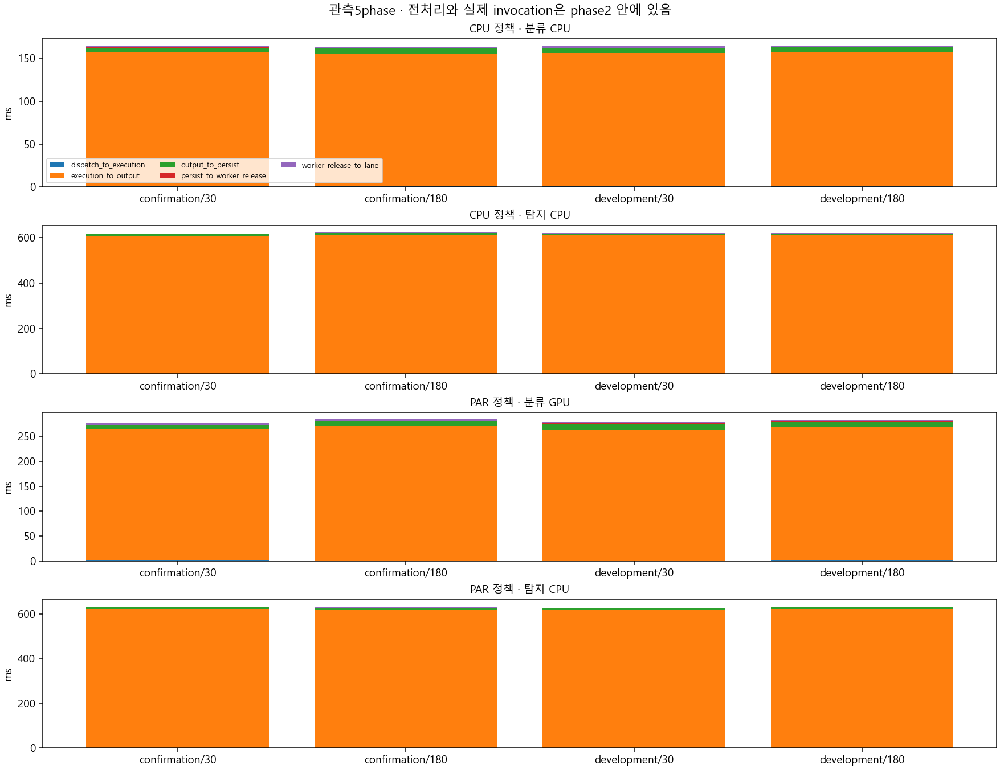

등록된 회복30/180초에 baseline30초와 첫 요청까지35초가 더해 실제 마지막 준비 부하 이후 약95/245초다. 개발에서는 긴 회복의 시작 AP가 +0.3°C였고 확인에서는 −0.2~−0.5°C였다. 초기 온도와 실행 순서가 교차하여 회복시간을 냉각량으로 대체하지 않는다.
시작 AP 후보는 부하 전 표본 하나만 사용하고 target 안에서 처리시간을 갱신하지 않는다. 이것은 동적 회복 모형이나 예정 도착부터의 종단간 검증이 아니다. 미래 AP와 실제 겹침은 잔차/연관 진단에만 사용한다. 확인 4/8 cell은 개발 초기AP 범위 밖 외삽이고 범위 안4개도 새로운 독립 확인이 아니다.
계약·재현 · 한국어 판독 · 실제 초기조건 · 전체 구간 비교 · 요청 순서별 비교 · 모든 오차 · 초기 AP 범위 안/밖 분해 · 미채택 후보 · 개발 동결
| 역할 | 정책 | 작업/자원 | 경계 | 180−30 처리시간 % | 초기 AP 차 °C |
|---|---|---|---|---|---|
| development | CPU | classification_CPU | invocation | 0.6715438849958804 | 0.3000000000000007 |
| development | CPU | detection_CPU | invocation | -0.22021219839175732 | 0.3000000000000007 |
| development | PAR | classification_GPU | invocation | 1.3903009316444357 | 0.3000000000000007 |
| development | PAR | detection_CPU | invocation | -0.09219803505054619 | 0.3000000000000007 |
| confirmation | CPU | classification_CPU | invocation | -0.27635750802153725 | -0.5 |
| confirmation | CPU | detection_CPU | invocation | 0.735393708211968 | -0.5 |
| confirmation | PAR | classification_GPU | invocation | 3.274840766803551 | -0.1999999999999993 |
| confirmation | PAR | detection_CPU | invocation | -0.7797705613017885 | -0.1999999999999993 |



